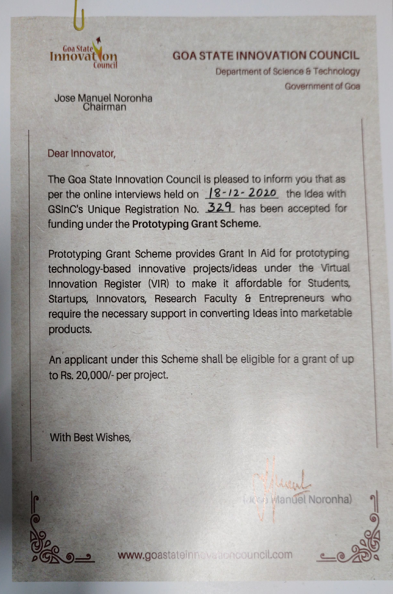
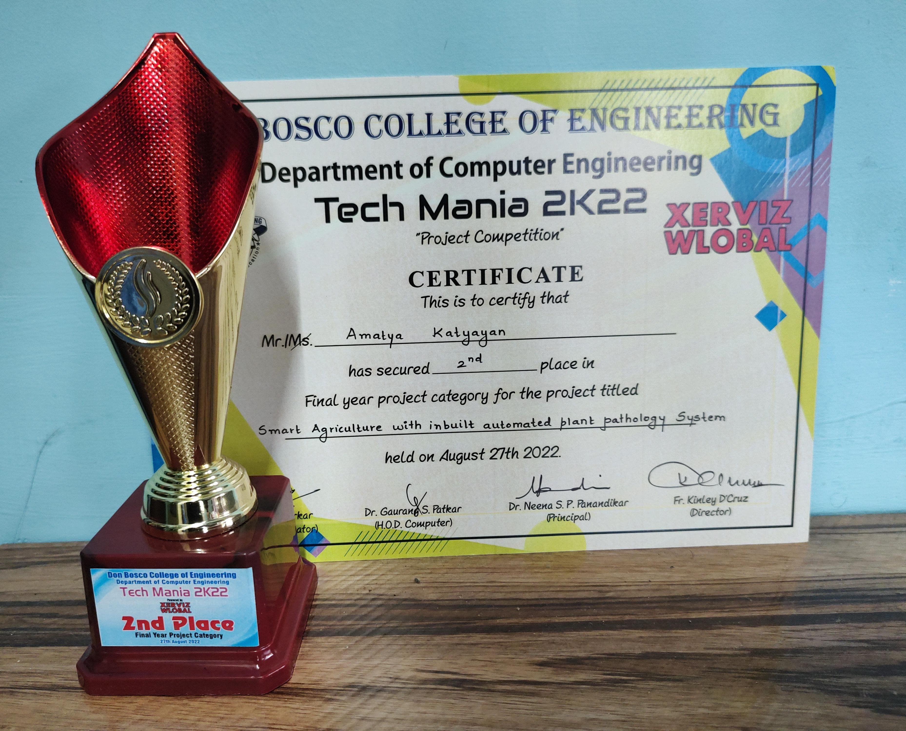

Project Areas
AI
IoT
Sensor Data
Precision Agriculture
Project Detail
This project combines sensor-informed crop support, AI-assisted analysis, and practical decision-making for agriculture workflows.
Project Areas
Overview
The project explores how AI, analytics, and connected sensing can support personalized crop insights and practical farming assistance.
It later became part of a broader research contribution published through IEEE Xplore and was supported by the Goa State Innovation Council.

Grant Support
Prototyping grant support for the smart agriculture system initiative.

Recognition
Recognized in the final year project competition for the smart agriculture work.